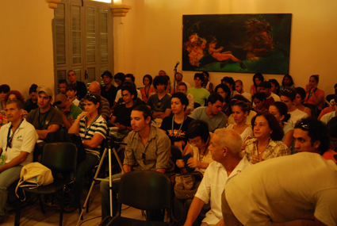
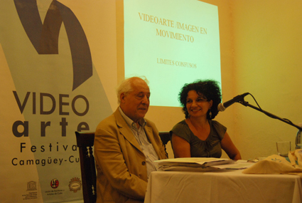
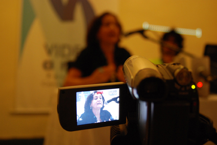
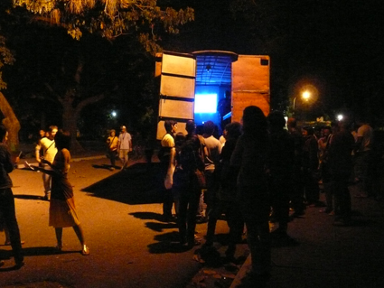

En el cine club François Truffaut han decidido proyectar, cada cierto tiempo, algunos materiales de videoarte. Se han animado también a invitar a realizadores y teóricos que puedan tratar el escabroso tema de las definiciones.
Días atrás, en casa de unos amigos, hablábamos sobre el asunto: que si los videoartistas a veces pretenden descubrir el Mediterráneo, su afán por epatar, la ausencia de una teoría sólida al respecto, nuestra imposibilidad de estar lo debidamente actualizados para lograr trazar al menos unas coordenadas previas desde las cuales apreciar la avalancha de imágenes que nos inunda de año en año, si nuestra actitud en tanto espectadores debe ser diferente a la usual respecto a las creaciones audiovisuales más tradicionales y respecto al arte mismo, si estamos asistiendo a la democratización absoluta de la imagen o, si por el contrario, todo es una impostura más… Por allí anduvo la charla y si bien no nos pusimos de acuerdo en casi nada, tuvo el mérito de hacernos sentir cuánta tela hay por cortar en estas cuestiones del videoarte.




Los camagüeyanos que hayan seguido de cerca el Festival Internacional de Videoarte o, incluso, aquellos que muy conscientemente hayan decidido permanecer de espaldas al asunto, podrían añadir ejemplos quizás más sabrosos que también muestren que el evento de marras, amén de las tantas y abrumadoras estadísticas que atestiguan su crecimiento, ya va dejando sus huellas en la ciudad. Y tal es, lo confieso sinceramente, la mayor suerte que un evento puede aspirar para sí.
No le resto méritos, más bien todo lo contrario, a la revolución citadina generada en los días de la cita, a la siempre beneficiosa confrontación entre artistas y críticos, y entre los artistas y el público. Tampoco a las sesiones teóricas, con momentos más o menos altos, como siempre suele pasar en estas empresas, aunque con la capacidad de generar discusiones y dejar un hervidero en la cabeza.
Sin embargo, y en aras de que cada edición sea mejor —para que mejor sea la estela en la ciudad, en los artistas convocados y en los críticos— sugiero mayor cuidado al organizar el evento teórico. A veces menos es más, como muy bien me comentó soto voce alguien en la primera mañana, cuando ya se podía adivinar que el tiempo no alcanzaría para las tantas ponencias, que muchas conversaciones quedarían truncas y muchos materiales que bien merecían ser proyectados y discutidos no correrían tal suerte. También habrá de afinarse el criterio de selección de las obras y, luego, su ubicación en la programación y en las galerías. Quizás aquí también valga eso de que menos es más y los artistas queden más agradecidos, y con ellos, todos nosotros. Como también vale sugerir que los horarios sean respetados, pues en un evento con una agenda tan ambiciosa como la prevista, la menor impuntualidad acarrea problemas, en primer lugar, para los organizadores.
Pero al margen de tales detalles, nimios en comparación con la cita en sí, su creciente proyección internacional y el entusiasmo de los camagüeyanos, todos debemos apostar por el Festival, cuya tropa lidera Jorge Luis Santana. Todos debemos apostar por un Festival que, a la vez que crece, nos hace crecer. En este caso, menos no es más.